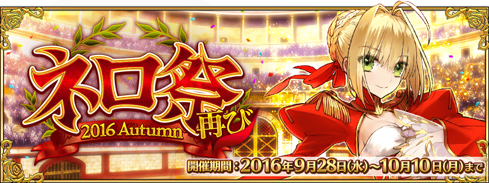
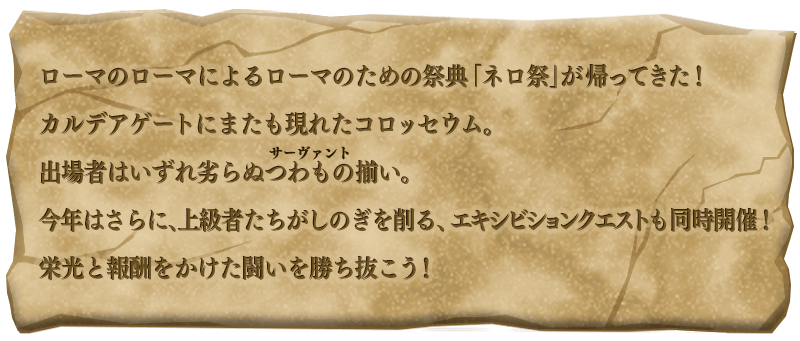
◆活動舉辦期間◆
2016年9月28日(三) 16:00～10月10日(一) 22:59
◆活動概要◆
舉辦期間限定活動「尼祿祭再臨 ～2016 Autumn～」！
活動期間中，在迦類底之門會出現2種類的活動關卡！
在與Servant戰鬥的挑戰大會關卡，可以獲得能交換豪華報酬的活動道具。
還有，挑戰無法續關的超高難易度戰鬥明星賽關卡，可以獲得呼符和靈基再臨素材道具等報酬。
◆活動参加條件◆
只有通過「特異點F 炎上汙染都市 冬木」的Master才能參加
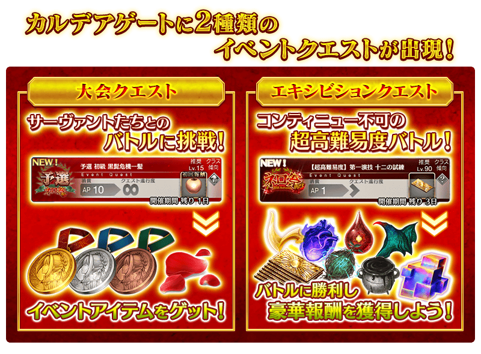

期間中，在迦類底之門會出現大會關卡。
大會關卡會根據難易度改變對戰的Servant。
還有，依照時間表的進行變化預選、本戰、決賽與關卡內容。
重覆挑戰關卡，獲得尼祿獎牌(ネロメダル)和深紅花瓣(真紅の花びら)吧！
| 尼祿祭預選 | |
|---|---|
| 舉辦期間 | 9月28日(三) 16:00～10月1日(六) 22:59 |
| 消費AP | 初級(AP10)、中級(AP20)、上級(AP30)、超級(AP40)、勇者級(AP40)、王者級(AP40) |
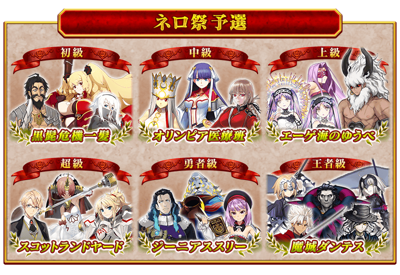
| 尼祿祭本戰 | |
|---|---|
| 舉辦期間 | 10月1日(六) 23:00～10月5日(三) 22:59 |
| 消費AP | 初級(AP10)、中級(AP20)、上級(AP30)、超級(AP40)、勇者級(AP40)、王者級(AP40) |
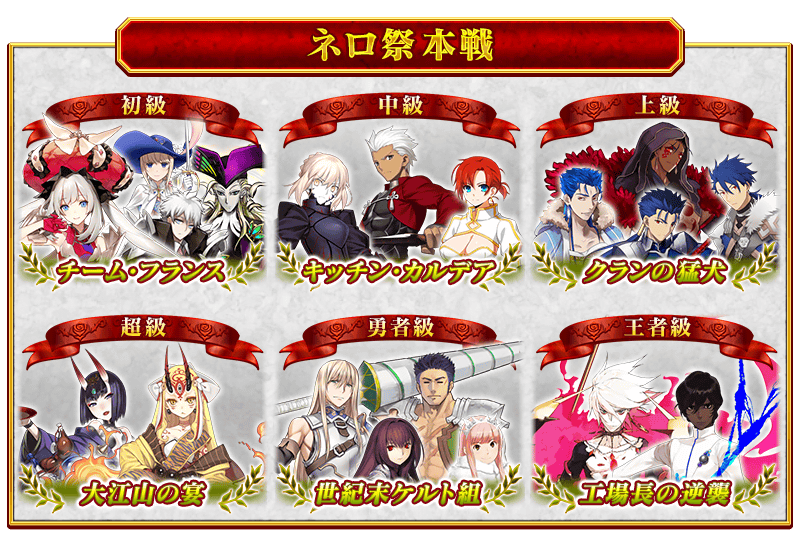
| 尼祿祭決勝 | |
|---|---|
| 舉辦期間 | 10月5日(三) 23:00～10月10日(一) 22:59 |
| 消費AP | 初級(AP10)、中級(AP20)、上級(AP30)、超級(AP40)、勇者級(AP40)、王者級(AP40) |

※9/28(三)修正
|
對上使用特殊技能等持有與平常相異攻擊方式的敵人，附有無法接關限制的挑戰超高難易度關卡。 |
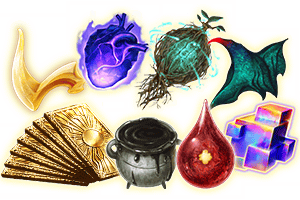 |
| 關卡名 | 時間表 | 關卡通過報酬 |
|---|---|---|
| 【超高難易度】 第一演技 十二の試練 |
9月28日(三) 23:00～ 10月10日(一) 22:59 |
呼符 1枚 戦馬の幼角 5個 |
| 【超高難易度】 第二演技 光と影の師弟 |
9月29日(四) 23:00～ 10月10日(一) 22:59 |
呼符 1枚 黒獣脂 5個 |
| 【超高難易度】 第三演技 百殺夜行 |
9月30日(五) 23:00～ 10月10日(一) 22:59 |
呼符 1枚 精靈根 5個 |
| 【超高難易度】 第四演技 魔竜再臨 |
10月1日(六) 23:00～ 10月10日(一) 22:59 |
呼符 1枚 蛮神の心臓 5個 |
| 【超高難易度】 第五演技 戦士たちの母 |
10月2日(日) 23:00～ 10月10日(一) 22:59 |
呼符 1枚 血的涙石 5個 |
| 【超高難易度】 第六演技 最古の英雄 |
10月3日(一) 23:00～ 10月10日(一) 22:59 |
呼符 1枚 竜の逆鱗 5個 |
| 【超高難易度】 フィナーレ 全力闘技 |
10月4日(二) 23:00～ 10月10日(一) 22:59 |
呼符 1枚 伝承結晶 1個 |
在活動關卡收集「深紅花瓣(真紅の花びら)」，在交換所交換景品吧！
景品的交換是以抽選方式進行。
在交換所，每個陣容會放入1個大獎道具。
抽到大獎道具後，實行「景品重置」的話，會補充新的大獎道具。
有放入大獎道具的陣容有6次份！
取得中獎道具後點擊「景品重置」鍵，補充大獎道具吧！
※第7次後不會補充大獎道具。必須入手陣容內的全道具才能進行「景品重置」。
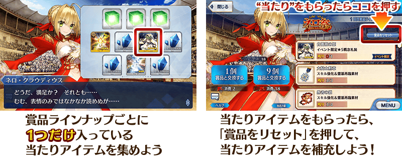
◆獎品陣容◆
|
【景品道具】 【技能強化＆靈基再臨素材】 【各種卡片】 【其他道具】 |

◆超值攻略方法・其1◆
裝備能在活動道具交換中入手的活動限定概念禮裝「ジョイント・リサイタル」的話，活動専用道具「真紅の花びら」的獲得數提升。
※請注意在各關卡的道具掉落率並非100%。
◆超值攻略方法・其2◆
裝備能在賞品交換所入手的「白薔薇の姫」的話，在「尼祿祭再臨 ～2016 Autumn～」的自身攻擊威力提升。
◆超值攻略方法・其3◆
裝備期間限定概念禮裝装備的話，活動専用道具「ネロメダル〔金〕」「ネロメダル〔銀〕」「ネロメダル〔銅〕」各自的獲得數提升。
※請注意在各關卡的道具掉落率並非100%。
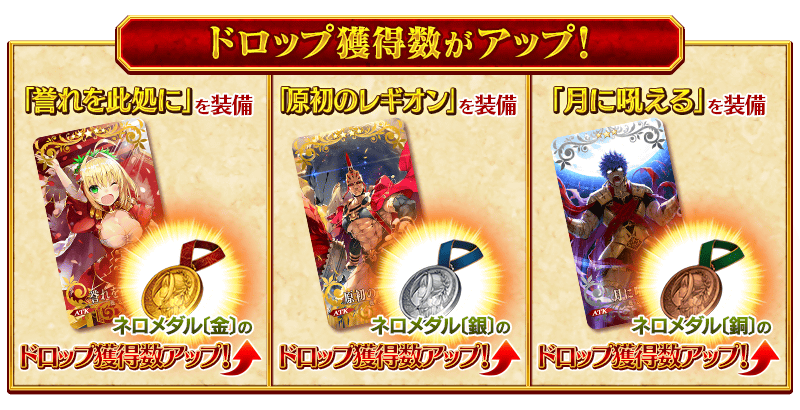
| 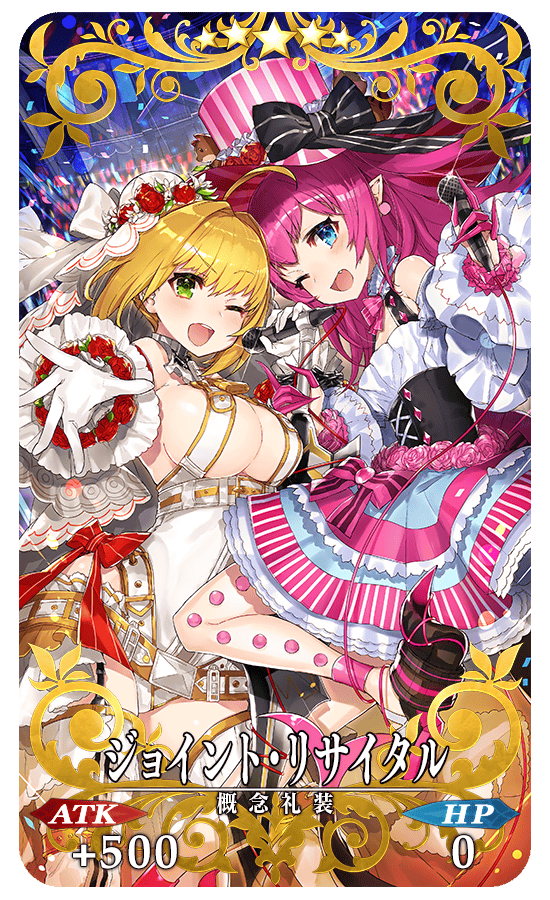 |
★★★★★SSR |

| 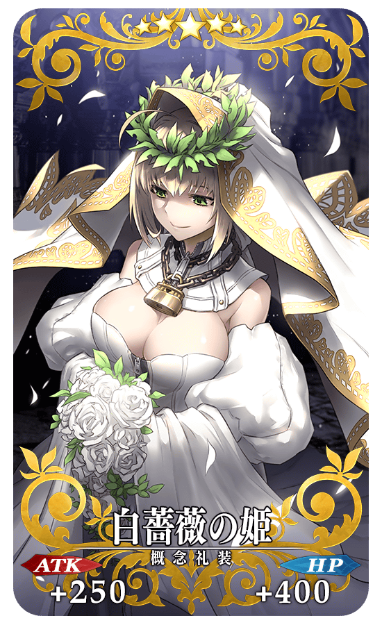 |
★★★★★SSR |
◆交換方法◆
交換期間：2016年9月28日(三) 16:00～10月19日(三) 13:59
※交換期間結束後「真紅の花びら」｢ネロメダル〔金〕｣｢ネロメダル〔銀〕｣｢ネロメダル〔銅〕｣會消失。
從達文西工房内的「活動道具交換」，用收集來的活動專用道具來交換以下的道具。
◆能用ネロメダル〔金〕交換的道具◆
|
【活動限定概念禮裝】 【技能強化＆靈基再臨素材】 【技能強化素材】 【其他道具】 |
◆能用ネロメダル〔銀〕交換的道具◆
|
【活動限定概念禮裝】 【技能強化＆靈基再臨素材】 【技能強化素材】 【其他道具】 |
◆能用ネロメダル〔銅〕交換的道具◆
|
【活動限定概念禮裝】 【技能強化＆靈基再臨素材】 【技能強化素材】 【其他道具】 |
翻新一部份Servant的戰鬥動作及寶具演出！
◆對象Servant◆
尼祿・克勞狄烏斯(Saber)
◆翻新實施時間◆
2016年9月28日(三) 16:00～
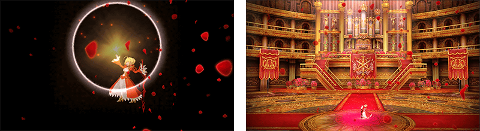
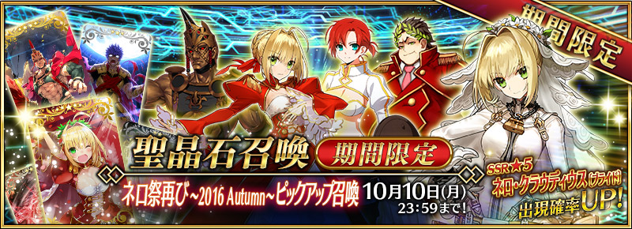
※9/28(三)修正
◆「尼祿祭再臨 ～2016 Autumn～Pick Up召喚」期間◆
期間：2016年9月28日(三) 16:00～10月10日(一) 22:59
舉辦期間限定「尼祿祭再臨 ～2016 Autumn～Pick Up召喚」！
記念活動舉辦「★5(SSR)尼祿・克勞狄烏斯〔Bride〕」以期間限定登場！
另外，在尼祿祭中與羅馬有關係的Servant「★4(SR)尼祿・克勞狄烏斯(Saber)」「★3(R)蓋烏斯・尤利烏斯・凱撒」「★3(R)羅慕路斯」「★3(R)布狄卡」Pick Up。
詳情請在聖晶石召喚畫面左下的召喚詳細確認。
※尼祿・克勞狄烏斯〔Bride〕在Pick Up召喚期間結束後，不會追加到故事召喚。
※PickUp期間中、尼祿・克勞狄烏斯(Saber)就算在第二特異点通過前也可以入手可能。
裝備期間限定概念禮裝「★5(SSR)誉れ此処に」「★4(SR)原初のレギオン」「★3(R)月に吼える」的話，活動専用道具的掉落獲得數提升。
Pick Up 期間中，期間限定Servant、Pick Up Servant、期間限定概念禮裝的出現機率提升！
10次召喚中★4(SR)以上1張確定和★3(R)以上的Servant1位確定！
※★4(SR)以上確定包含Servant和概念禮裝。
※所謂「出現機率UP」意指比同稀有度的Servant及概念禮裝出現機率更高的設定。

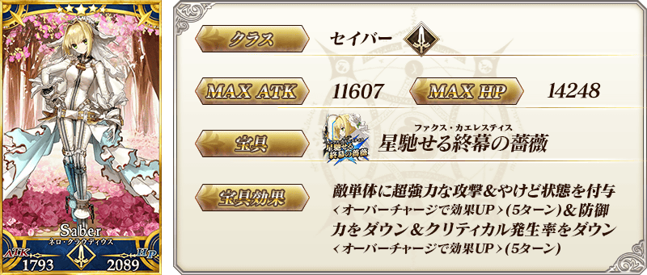
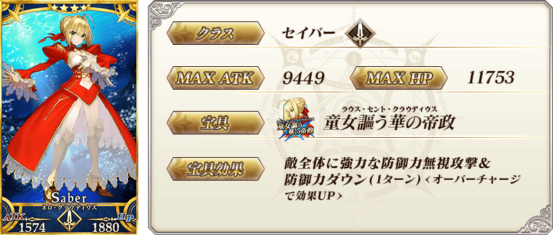
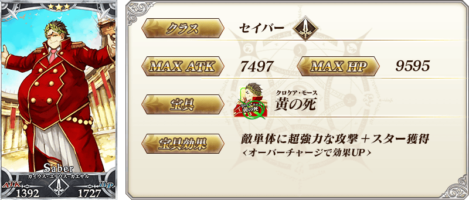
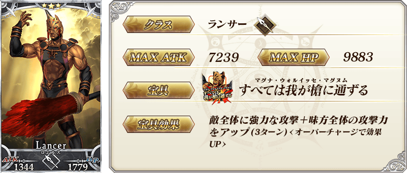

| 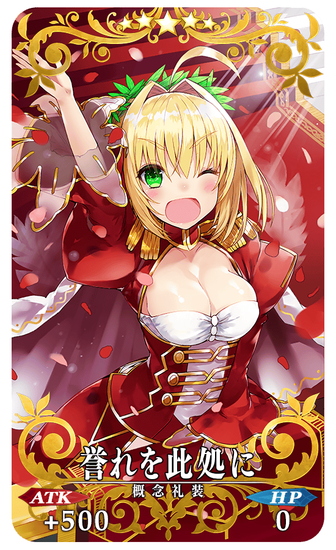 |
★★★★★SSR 誉れ此処に ATK 500（最大：2000）HP 0 技能 自身的寶具威力提升15%＆Critical威力提升15%＆賦予每回合星星3個獲得狀態 ＋ ネロメダル〔金〕的掉落獲得數增加1個【『尼祿祭再臨 ～2016 Autumn～』活動期間限定】 |
| 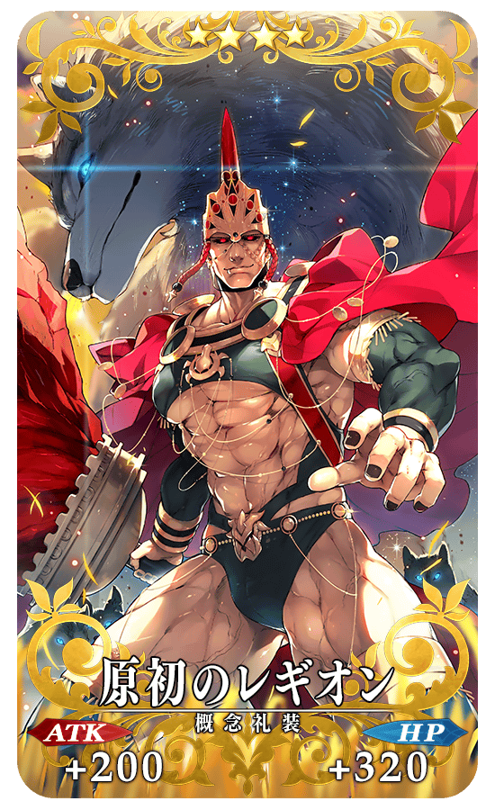 |
★★★★SR 原初のレギオン ATK 200（最大：750）HP 320（最大：1200） 技能 自身的防禦力提升8%＆寶具威力提升15% ＋ ネロメダル〔銀〕的掉落獲得數增加1個【『尼祿祭再臨 ～2016 Autumn～』活動期間限定】  |
| 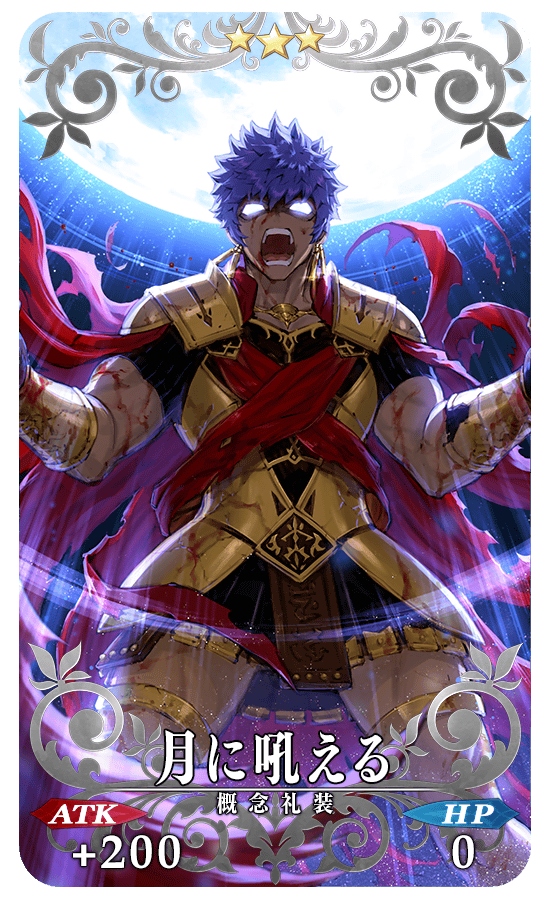 |
★★★R 月に吼える ATK 200（最大：1000）HP 0 技能 自身的Buster卡性能提升10%＆弱體耐性下降20%【副作用】 ＋ ネロメダル〔銅〕的掉落獲得數增加1個【『尼祿祭再臨 ～2016 Autumn～』活動期間限定】 |
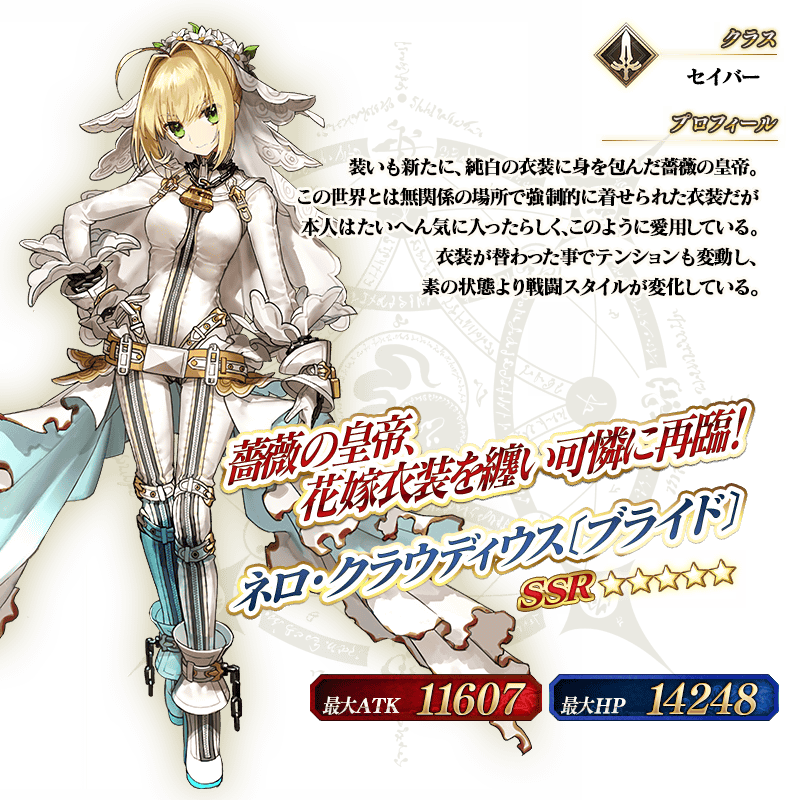